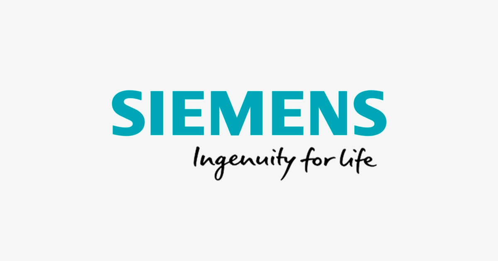

About Me
Currently pursuing a Master's degree in the field of Web and Data Science with a focus on Data Science, Machine Learning, Semantic Web, and Information Retrieval. During this period, I gained theoretical knowledge and practical experience about Machine Learning and Data Science concepts. Moreover, a professional with experience in quality assurance, software testing, project management, and innovation management in the Industrial Automation field.
MSc. Web and Data Science
Passion for learning motivated me to pursue a master's degree in Web and Data Science.
Timeline:
April, 2019 - April, 2022
Major subjects:
Machine Learning, Data Science, Semantic Web, Information Security, Game Theory, Network Theory and Python Programming.
Practical Exposure:
Tableau, Power BI, SQL, HTML, CSS, RDF, and OWL
Data Science and Engineering Intern
Schaeffler Technologies AG & Co. KG, GERMANY
Timeline:
Feb, 2021 - July, 2021
Visualizatiol Tools:
Tablaeu, Power BI, Dtale, Autoviz, and Sweetviz
Tasks:
Industrial Synthetic Data Generation, Data Visualization, Exploratory Data Analysis, Manufacturing plant scrap visualization.

Senior Software-Test Specialist
Siemens Technology and Services Pvt. Limited, Bangalore, India
Timeline:
May,2011 - March,2019Communication Protocol:
PROFINET, PROFIBUS, RS-232, and OPC-UA.Devices:
PLC, IOT devices (MindConnect Device), SIRIUS motor management devices.Domain:
Software testing, Prototype Development, Reverse Engineering, Fuzz testing, Exploratory testing, and Test Project Managment.Projects and Technical Skills
It's about learning, taking risks, and challenging yourself.Creating Ideas and Developing prototype
Worked on various prototype development during my professional and academic career.
- Algorithm for dynamically building virtualized industrial field devices to optimize processes.
2019-Patent Published(Awaiting Grant)
- Intelligent Heat, Ventilation, and Air Conditioning System.
2017 Patent Published
- Fake News Detection with weakly supervised learning.
Machine
learning model based on Mean teacher using tensorflow and keras. Web application developed in flask and deployed in google cloud.
Download paper
Github
Github Web Application
Software testing and Security testing
9 Years of experience in software testing and security testing of Industrial devices and software.
- Functional Safety Certified Professional training and Functional Safety Engineer Level-1(IEC 61508).
- Foundation level software testing certified by International software testing and qualification board (ISTQB).
- Recently, presented seminar in University of Koblenz and Landau about challenges of implementing security testing
in Software development life cycle, different techniques, and tools.
For reference, you can have a look on
my medium article and
download paper
Programming Languages and Operating system
Programming Languages:
- Python(Tensorflow, Keras, Sklearn, Pandas, Numpy, Pyspark, Flask).
- MATLAB (During assignments and projects)
- SQL(BASIC), C#(brush up required)
- XML, JSON, HTML, CSS.
Visualisation Tools:
- Power BI, Tablaeu, Dtale, AutoViz, SweetViz, Pandas Profiling.
Software Engineering and Domain
Software Engineering: Agile Methodologies, V-model, LEAN Methodologies, Software Testing Life Cycle. Domain: Machine Learning, Deep Learning, Data Science, Natural Langauge Processing(NLP), Exploratory Data Analysis, Adversarial Attacks, and Data Visualisation.